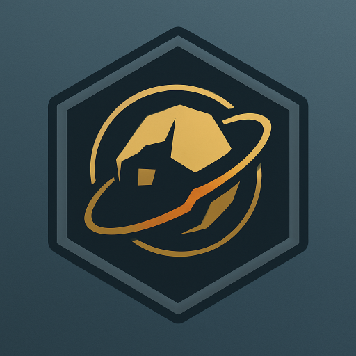

No events yet. They appear when you spawn, respawn, get downed, die or sit down / stand up.
Members choose what to share. Health and other vitals only appear for members who ticked Vitals & environment; by default others see only online status, ship and seat.
The token never leaves this PC in the clear: every upload is signed with it, the site address must be HTTPS, and the token is stored encrypted with Windows.
Star Citizen 5.0 can run a telemetry server on this PC (127.0.0.1:2942). It is unofficial and may change between patches. The app needs the game’s .proto schema files to read it.
Switch the game’s telemetry server on in your user.cfg (choose your PTU or LIVE folder — telemetry is a 5.0 feature) (a backup is made first). Restart the game afterwards.